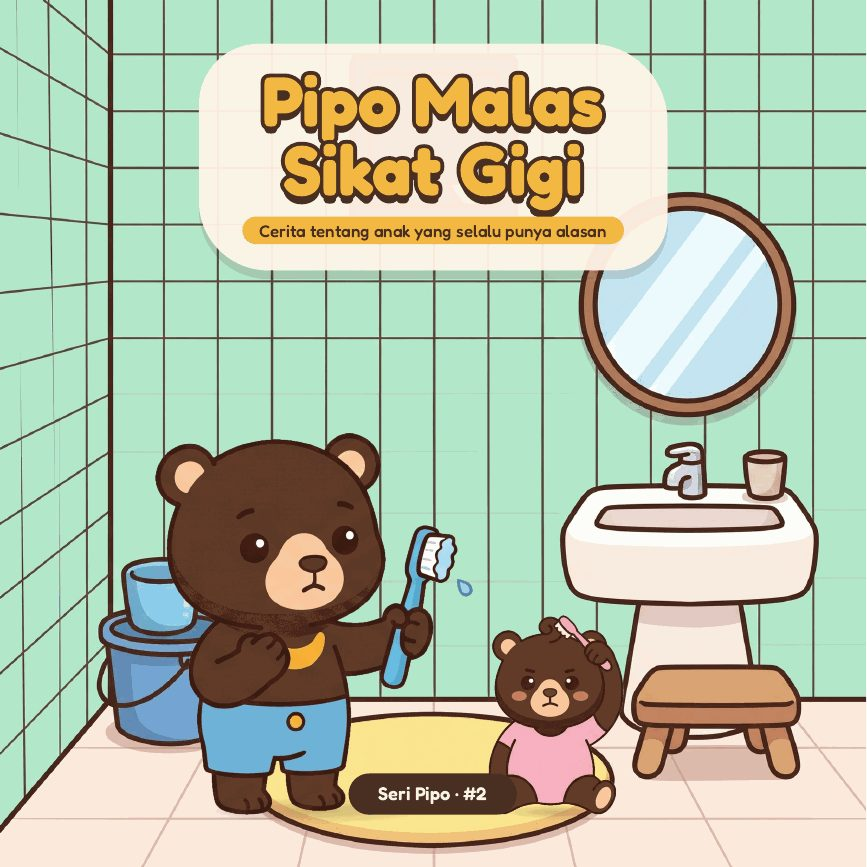
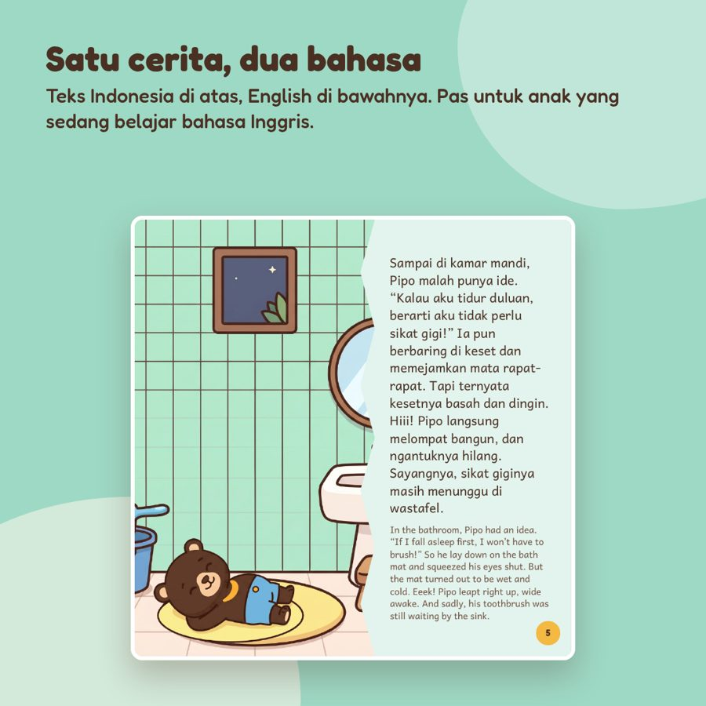

Pipo Malas Sikat Gigi

Anak selalu punya alasan untuk tidak sikat gigi?
Pipo juga punya semua alasan itu. Ia bahkan cuma membasahi sikatnya lalu bilang, “Gigi Pipo sudah bersih kok.” Sampai sehelai kangkung nyangkut di giginya di depan sahabatnya, dan adiknya mulai meniru semua kepura-puraannya.
Tanpa menakut-nakuti soal gigi bolong, cerita ini mengajak anak melihat sendiri kenapa sikat gigi sungguhan itu penting, sekaligus menyelipkan cara yang benar: pasta sebesar kacang polong, sikat atas, bawah, depan, dan belakang.
Pilih edisi
Edisi Indonesia–EnglishTeks Indonesia dan English di setiap halaman, PDFRp34.000Edisi Bahasa IndonesiaTeks bahasa Indonesia, PDFRp27.000English EditionSeluruh teks bahasa Inggris, PDF + EPUBRp34.000
Isi buku
- Cerita bergambar 18 halaman, enak dibacakan sebelum tidur
- Halaman “Untuk Ayah & Bunda”: 3 pertanyaan untuk ngobrol dengan anak, plus tips
- Permainan cari benda tersembunyi dan tebak perasaan Pipo
- 25 halaman, nyaman dibaca di HP, tablet, atau laptop. File langsung bisa diunduh setelah pembayaran.

Hemat lebih banyak
Paket 3 Buku Seri Pipo mulai Rp74.000.